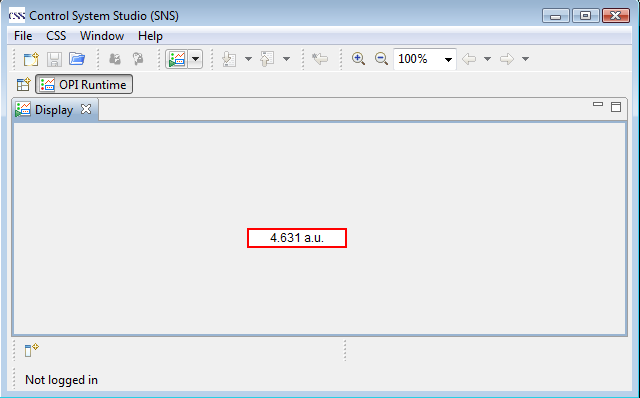

Getting Started
Building your fist OPI step by step
- Step 1. Open the OPI Editor perspective from Menu:
Window->Open Perscpective->Other..->OPI Editor
- Step2. Create a new OPI file from Menu
File->new->Others...->BOY->OPI File
- Step3. Click "Text Update" widget on the palette, then click or drag a rectangle in the editing area to place the widget on the editing area.
- Step4. Go to the properties view, set "PV Name" to "sim://noise"
- Step5. Save file by pressing "Ctrl+S". Click the "Run OPI" button on the toolbar or press "Ctrl+G" to run the OPI in the editor. Congratulations! Now you can see the value update in the widget!
- You can also show PV value from other widgets (e.g. Gauge, Meter, Thermometer...) by following the same steps.
